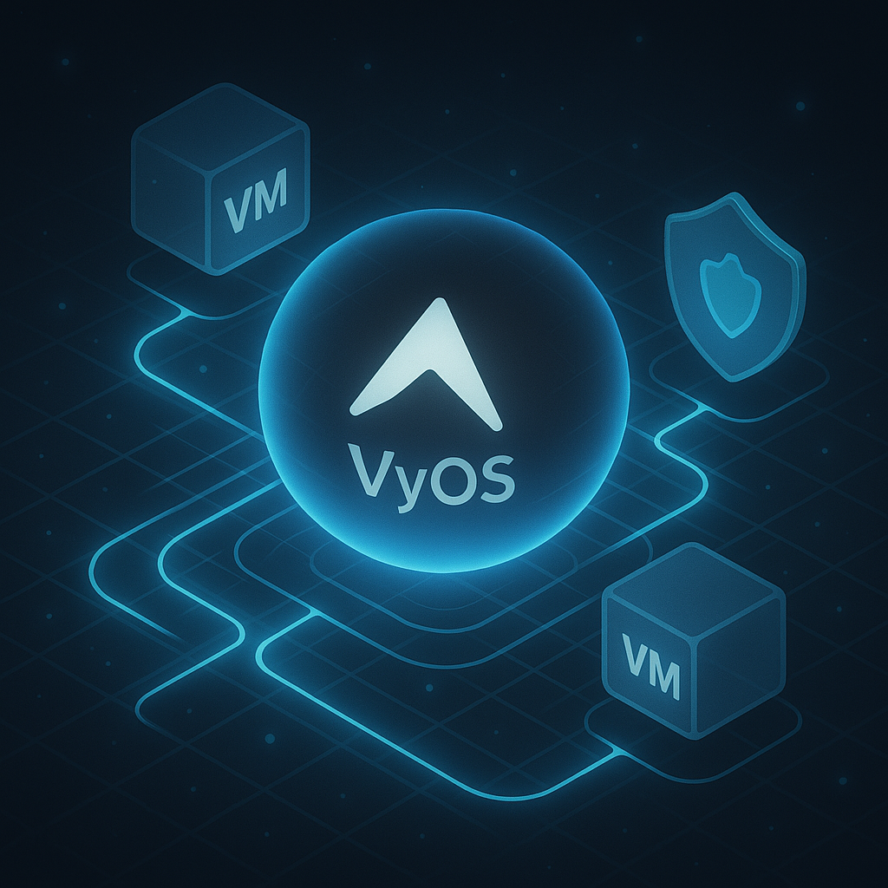
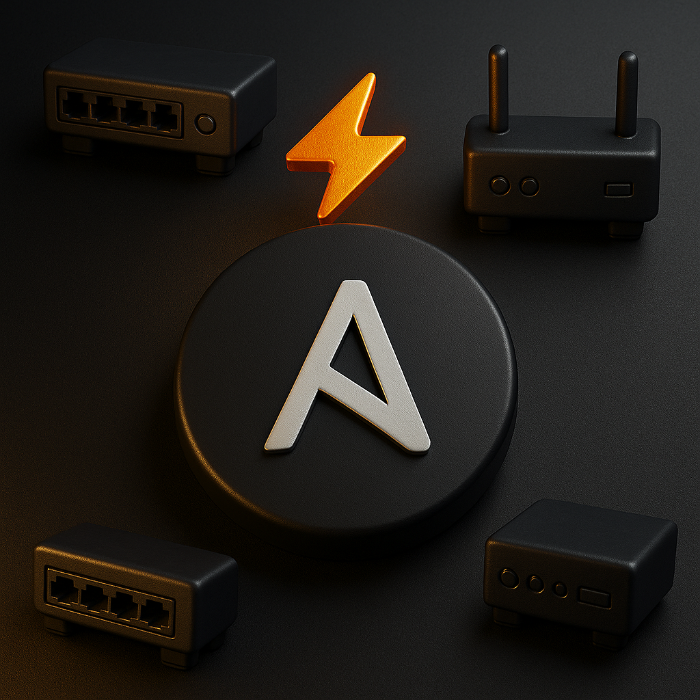
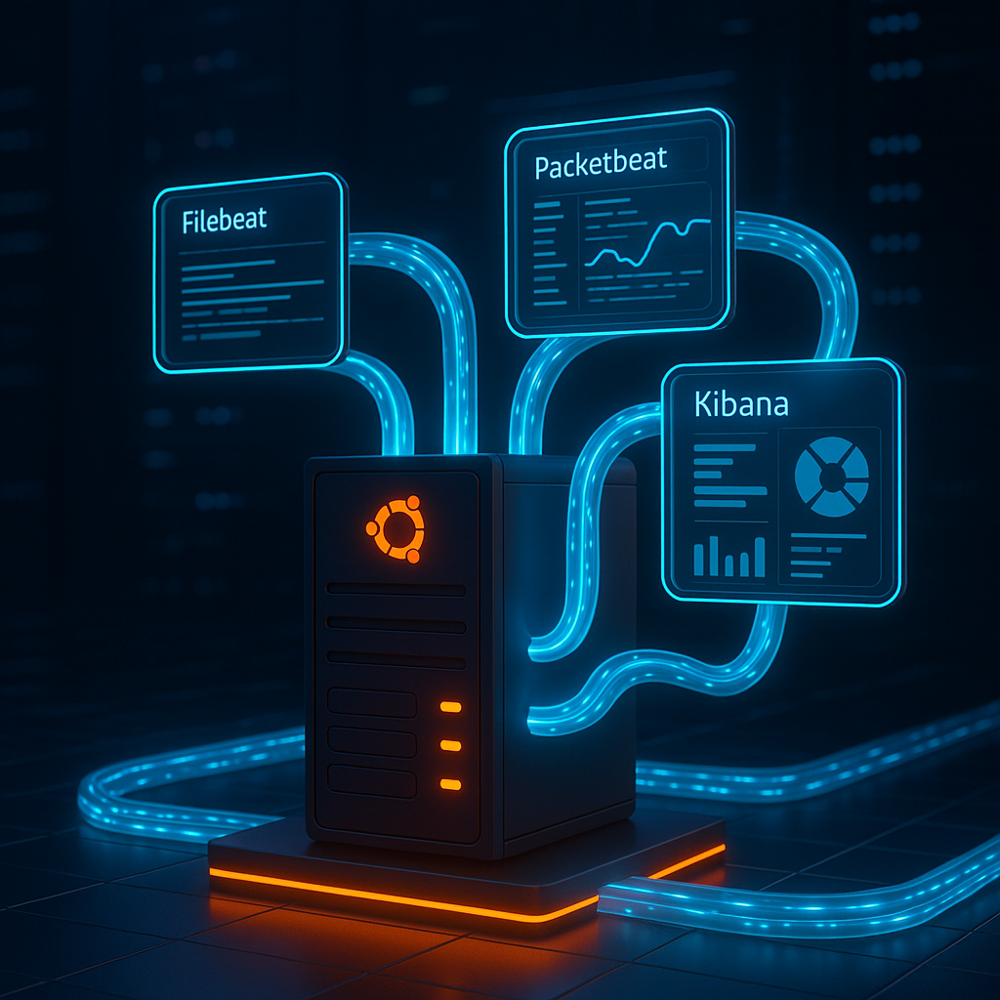
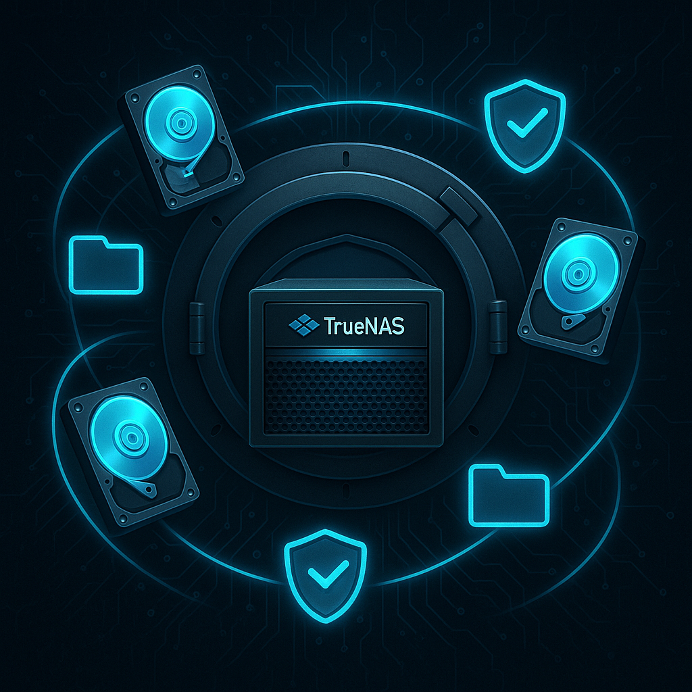
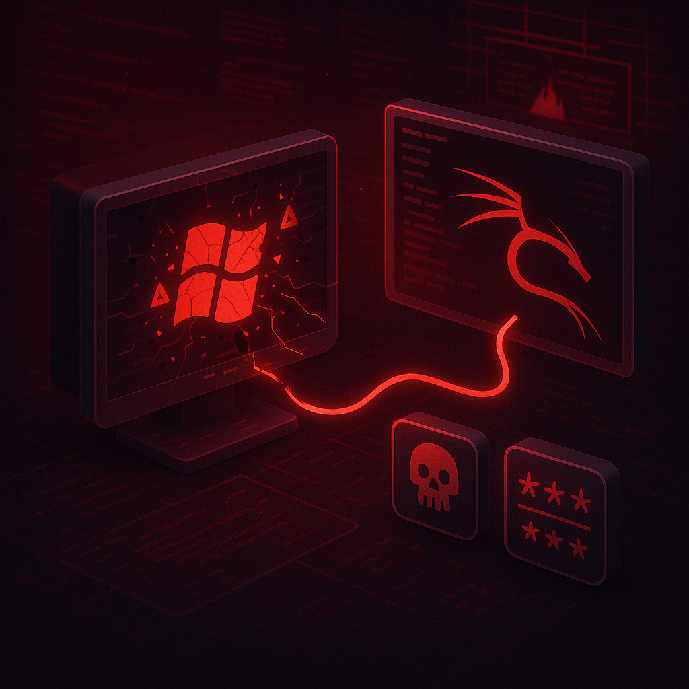
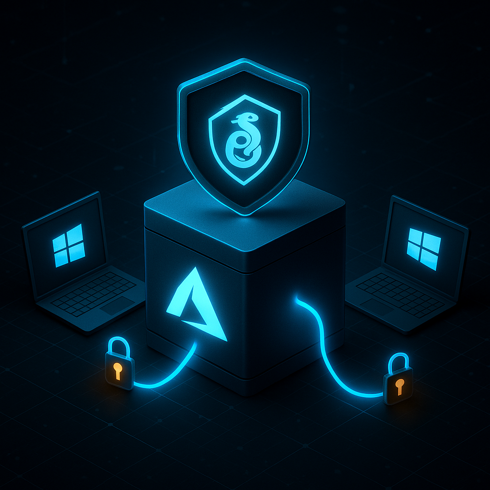

Cloud DevOps: NGINX & SSL Portfolio Site

Secure Virtual Lab: ESXi + VyOS + Palo Alto

Hands-On Cisco Networking Lab

Enterprise-Grade Network Automation Dashboard
Connected Pet House with IoT, Flutter & Firebase

ELK Stack Monitoring

TrueNAS Storage Setup

Windows SMB Exploitation
